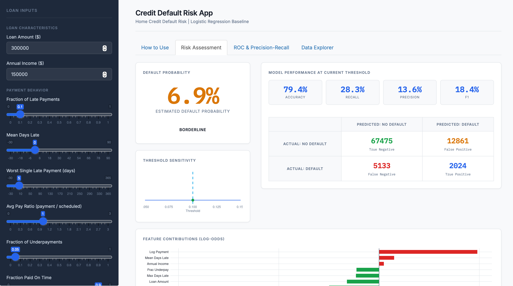

Credit Default Risk App

Predicting loan default sounds straightforward until you account for class imbalance. At an 8.2% default rate, a model that flags no one as high risk achieves over 90% accuracy while catching zero defaulters. Accuracy is the wrong metric. The real question is whether a model can identify the borrowers who matter, without rejecting too many creditworthy applicants.
This project began as a Python comparison of logistic regression against an LSTM/RNN baseline. The logistic model's interpretability made it the right choice for deployment: in credit scoring, regulatory scrutiny favors explainable, auditable models over black-box alternatives. Features were engineered from 291,643 real loan records from the Home Credit dataset, drawing on payment history: fraction of late payments, mean and max days late, pay ratio, and loan amount, among others. The model was evaluated on a held-out test set using AUC, recall, and precision-recall curves rather than accuracy.
The R/Shiny app makes the model interactive: enter an applicant profile to get a default probability and risk verdict, drag the decision threshold to see recall and precision update live, and explore feature distributions by default status.